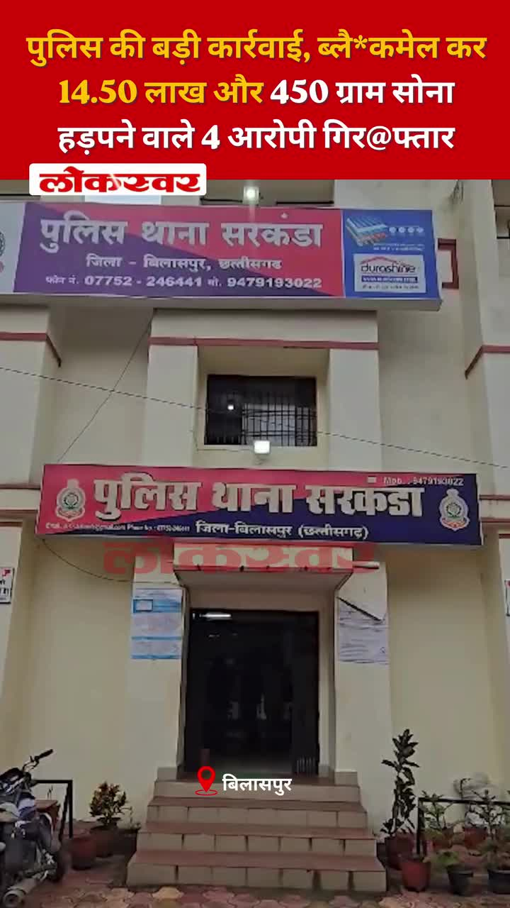
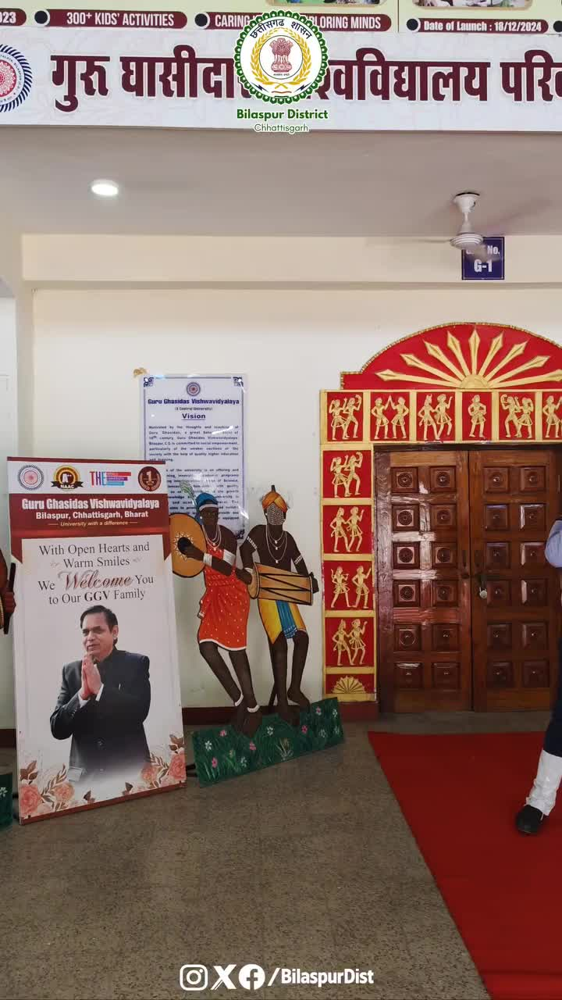
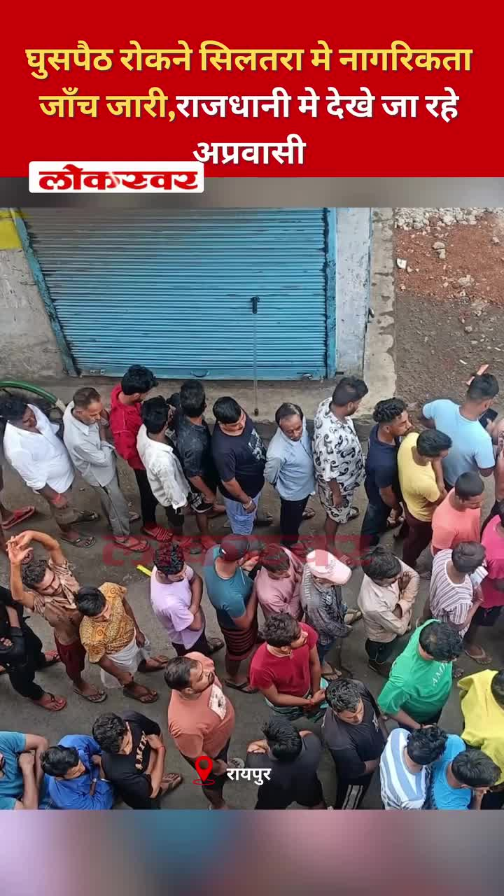

Bilaspur News Hub
1
BUSINESS
1
EDUCATION
1
EVENT
16
GOVERNMENT
2
HEALTH
3
INFRASTRUCTURE
27
INSTAGRAM NEWS
11
NEWS
2
OTHER
18
POLICE
2
SOCIAL
12
YOUTUBE VIDEOS
BUSINESS1

The Hitavada · Scraped: 2026-08-04 08:21:20
Illegal hawkers are encroaching on Veterinary College Road, disrupting traffic and affecting local businesses. Municipal authorities plan to evict them and enforce street vending regulations.
EDUCATION1

The Hitavada · Scraped: 2026-08-04 08:21:20
डॉ. बाबासाहेब अम्बेडकर प्रौद्योगिकी विश्वविद्यालय (आरटीएमएनयू) ने शैक्षणिक वर्ष 2026‑27 के लिए अपने विश्वविद्यालय छात्रावास में नए प्रवेश निलंबित कर दिए हैं। यह निर्णय संभवतः क्षमता या प्रशासनिक कारणों से लिया गया है, जिससे भविष्य के छात्रों पर प्रभाव पड़ सकता है।
EVENT1

G News Bilaspur · Published: 2026-08-03 | Scraped: 2026-08-03 16:20:44
In Mohanakhar village, a deep pit resembling a well has mysteriously formed in a farmer's field, raising concerns about land stability. Authorities are investigating the cause.
GOVERNMENT16

Nai Dunia Bilaspur · Published: Tue, 04 Au | Scraped: 2026-08-04 04:58:43
The Chhattisgarh High Court declared moving a suspect from Haryana without transit remand illegal and quashed the detention and remand orders, reinforcing procedural safeguards.

Nai Dunia Bilaspur · Published: Tue, 04 Au | Scraped: 2026-08-04 08:21:20
Patwaris in Bilaspur have been handling duties for two decades but still face salary inconsistencies, causing widespread anger. They demand resolution of the long-standing wage disparity.

CG Wall · Published: Tue, 04 Au | Scraped: 2026-08-04 08:21:20
BJYM has named Mahirshi Bajpayee as the new in-charge of its Bilaspur Madhya Mandal to strengthen the youth wing. The move aims to boost organizational activity and outreach in the region.

Lokswar · Published: Tue, 04 Au | Scraped: 2026-08-04 08:21:20
The Chhattisgarh Health Department has transferred senior officials and appointed new heads for Bilaspur and Raipur divisions. The changes aim to improve administrative efficiency.

Lokswar · Published: Mon, 03 Au | Scraped: 2026-08-03 09:04:30
The monsoon has become active across Chhattisgarh, prompting orange and yellow alerts in several districts. Authorities warn of heavy rain and lightning strikes. Residents are advised to take precautions.

Nai Dunia Bilaspur · Published: Mon, 03 Au | Scraped: 2026-08-03 12:57:58
The Chhattisgarh High Court has declared illegal a prohibition on using land without prior acquisition and compensation. The judgment clarifies that authorities must follow due process before imposing land‑use restrictions.

CG Wall · Published: Mon, 03 Au | Scraped: 2026-08-03 12:57:58
Revenue patwaris in Bilaspur have launched a protest demanding pending promotions and equal pay, accusing the government of discrimination. The district unit of the Chhattisgarh Revenue Patwari Association submitted a memorandum to the chief secretary.

Lokswar · Published: Mon, 03 Au | Scraped: 2026-08-03 12:57:58
Coal India Limited has increased assistance for its retired employees, focusing on enhanced pension benefits and welfare measures in Bilaspur. The initiative aims to improve financial security and support for former staff.

BREAKINGUniversity secretary arrested for salary scam / विश्वविद्यालय में वेतन घोटाला, कुलसचिव गिरफ्तार
CG Wall · Published: Mon, 03 Au | Scraped: 2026-08-03 16:20:44
A daily wage employee at Hemchand Yadav University reported missing salary, prompting a police probe that uncovered a fraud scheme. The university secretary was arrested for embezzling funds.
Lokswar · Published: Mon, 03 Au | Scraped: 2026-08-03 20:59:08
The BJP Yuva Morcha has named Mahishi Bajpayee as the new in-charge of its Bilaspur Madhya Mandal to strengthen and activate the organization. The appointment aims to boost youth engagement in the region.
The Hitavada · Scraped: 2026-08-04 08:21:20
The Supreme Court ruled that states may withdraw FIRs filed against students involved in NEET protests, easing legal pressure on them. This decision aims to reduce harassment of student activists.

The Hitavada · Scraped: 2026-08-04 08:21:20
The Lok Sabha passed a bill to increase the number of Supreme Court judges without holding a debate. The move seeks to address the growing case backlog in the higher judiciary.
The Hitavada · Scraped: 2026-08-04 08:21:20
A court acquitted Brij Bhushan in a sexual harassment case, ending the legal proceedings against him. The verdict has sparked mixed reactions among legal experts and the public.
The Hitavada · Scraped: 2026-08-04 08:21:20
The government has disbursed the first installment of interim relief amounting to Rs 160 crore to 75,000 affected households. This aid aims to provide immediate financial support to those impacted by recent disasters.
The Hitavada · Scraped: 2026-08-04 08:21:20
नागपुर नगर निगम ने उच्च न्यायालय को बताया कि एक नया ‘प्रदूषण‑मुक्त नागपुर’ पोर्टल शोर की शिकायतों के लिए एकल खिड़की के रूप में काम करेगा। यह पहल शिकायतों को दर्ज करने और शोर प्रदूषण को अधिक कुशलता से संबोधित करने को सुव्यवस्थित करेगी।

G News Bilaspur · Published: 2026-08-03 | Scraped: 2026-08-03 16:20:44
Revenue officers protested demanding correction of salary anomalies and guaranteed promotion timelines. The agitation reflects long-standing discontent among patwaris.
HEALTH2

Lokswar · Published: Mon, 03 Au | Scraped: 2026-08-03 12:57:58
Ujjwal Hasdev‑Unat Saraguja organization organized a free health camp in the tribal village of Sitkalo, offering medical check‑ups and medicines. Villagers received treatment and essential drugs, improving community health.

The Hitavada · Scraped: 2026-08-04 08:21:20
The Centre proposed new rules for two-wheeler ambulances to improve emergency medical access, especially in congested areas. The guidelines aim to standardize safety and response times for these vehicles.
INFRASTRUCTURE3

Nai Dunia Bilaspur · Published: Tue, 04 Au | Scraped: 2026-08-04 08:21:20
A weak culvert on NH45 near Champi collapsed, blocking the road and stranding a bus carrying 35 passengers. The incident follows years of heavy truck traffic using the fragile structure.

Nai Dunia Bilaspur · Published: Mon, 03 Au | Scraped: 2026-08-03 12:57:58
The state will spend ₹29.77 crore to upgrade the Mopka‑Khera and Sipat‑Baloda roads, enhancing connectivity and easing travel between Korba and Baloda. The improved highways are expected to boost regional trade and reduce travel time.

The Hitavada · Scraped: 2026-08-04 08:21:20
A four-year-old bridge over the Kanhan river has developed severe potholes, exposing iron bars and posing safety risks. Authorities have been urged to repair the structure to prevent accidents.
INSTAGRAM NEWS27


Bilaspur police arrested two men in Kota for illegal cow slaughter and beef sales. The crackdown underscores strict enforcement against cattle theft and meat trafficking.

The post is a generic Instagram update with no additional details provided.

Another generic Instagram post from @bilaspurdiaries lacking specific content.


A young man drowned in a dam, and his body was later recovered. The SDRF conducted an extensive search operation in the area. Authorities are investigating the incident.


A former minister erupted in anger over a proposed liquor shop and confronted the excise officer by phone. He criticized the decision and demanded its reversal. The issue has sparked local debate.


Kavach will boost rail safety, auto‑braking trains on signal miss. This aims to prevent collisions and improve reliability. Indian Railways plans nationwide rollout.


छत्तीसगढ़ सरकार पर्यावरण संरक्षण को जनभागीदारी का अभियान बना रही है। 'एक पेड़ माँ के नाम' अभियान के तहत हरित, समृद्ध और पर्यावरण-सुरक्षित छत्तीसगढ़ का संकल्प और सशक्त हो रहा है।हमारे व्हॉट्सऐप चैनल से जुड़ने के लिए लिंक पर क्लिक करें...https://whatsapp.com/channel/0029VbBdXyRJf05ivBgauG3V#EkPedMaaKeNaam #HaritChhattisgarh #PlantationDrive #EnvironmentProtection @moefcc @vishnudsai @ChhattisgarhCMO @ForestCgGov by @bilaspurdist
सरगुजा के लखनपुर थाना क्षेत्र के ग्राम जमगला में एक युवक मोबाइल टावर पर चढ़ गया, जिससे इलाके में हड़कंप मच गया। पुलिस और ग्रामीणों की समझाइश के बाद युवक को सुरक्षित नीचे उतार लिया गया। पुलिस के अनुसार युवक मानसिक रूप से अस्वस्थ बताया जा रहा है और मामले की जांच जारी है।#SurgujaNews #Lakhanpur #ChhattisgarhNews #ViralVideo #BreakingNews by @g_news_bilaspur
बिलासपुर–पेंड्रा मार्ग पर लगातार बारिश के बीच एक पुल का हिस्सा क्षतिग्रस्त हो गया, जिससे सवारियों से भरी बस हादसे का शिकार हो गई। सभी यात्रियों को सुरक्षित निकाल लिया गया। घटना के बाद पुल पर आवागमन बंद कर जांच और मरम्मत कार्य शुरू कर दिया गया।#BilaspurNews #PendraRoad #BridgeCollapse #ChhattisgarhNews by @g_news_bilaspur

पुलिस की बड़ी कार्रवाई, ब्लैकमेल कर 14.50 लाख और 450 ग्राम सोना हड़पने वाले 4 आरोपी गिरफ्तार
#BilaspurPolice #SarkandaPolice #BlackmailingArrest #ExtortionCase #CrimeNews #GoldRobbery #ChhattisgarhPolice #BreakingNews by @lokswar.in
रायपुर के क्लब में कथित कैब्रे डांस का वीडियो वायरल....
#RaipurNews #HotelStarWood #TitosClubRaipur #ViralVideoControversy #CabaretDanceScam #RaipurPolice #ExciseDepartmentCG #BreakingNews by @lokswar.in
POV : Golden Side of Bilaspur ✨🌇........#cinematography #fyp #viralreels #bilaspur #evening by @bilaspurdiaries

प्रधानमंत्री श्री नरेन्द्र मोदी ने देशव्यापी 'नशा मुक्त युवा फॉर विकसित भारत संकल्प अभियान' का नई दिल्ली से शुभारंभ किया। अभियान का जिला स्तरीय कार्यक्रम उप मुख्यमंत्री श्री अरुण साव के मुख्य आतिथ्य में गुरु घासीदास विश्व विद्यालय में आयोजित किया गया। उन्होंने विकसित भारत के निर्माण के लिए युवाओं को नशापान से दूर रहने का आह्वान किया। हजारों युवाओं को उन्होंने शपथ भी दिलाई। इस अवसर पर आयोजित रक्तदान शिविर में करीब 30 युवाओं और प्रोफेसरों ने रक्तदान किया। by @bilaspurdist
This Instagram post contains no textual content, only a placeholder. No further details are available.
Two teachers were suspended after allegations of consuming alcohol at a school in Gariaband. The incident led to immediate disciplinary action by school authorities.
The capital's traffic signal system has failed, with many signals non‑functional, leading to a higher risk of accidents. Authorities have been urged to repair the network promptly to restore safe road conditions. The situation is causing congestion and endangering commuters.

To stop illegal infiltration, citizenship checks are being conducted in Silatura, after migrants were spotted in the capital. The operation aims to verify identities and secure the region. Residents are cooperating with the ongoing verification process.
A youth was brutally attacked over a petrol dispute, resulting in serious injuries. Police have arrested two suspects and launched an investigation. The incident highlights rising violence over minor resources.
A young man drowned at Bendri dam, prompting a massive search operation by rescue teams. The incident follows previous accidents at the waterbody, raising safety concerns. Authorities are intensifying patrols and warning the public.
NEWS11

Lokswar · Published: Tue, 04 Au | Scraped: 2026-08-04 08:21:20
Meteorologists warn that monsoon activity will increase across Chhattisgarh, prompting alerts in several districts. Residents are advised to stay cautious of possible heavy rains.

The Hitavada · Scraped: 2026-08-03 09:04:30
The Hitavada · Scraped: 2026-08-03 09:04:30
The Hitavada · Scraped: 2026-08-03 09:04:30
The Hitavada · Scraped: 2026-08-03 09:04:30
The Hitavada · Scraped: 2026-08-03 09:04:29

The Hitavada · Scraped: 2026-08-03 09:04:29

The Hitavada · Scraped: 2026-08-03 09:04:29
The Hitavada · Scraped: 2026-08-03 09:04:29
The Hitavada · Scraped: 2026-08-03 09:04:29
The Hitavada · Scraped: 2026-08-03 09:04:29
OTHER2
The Hitavada · Scraped: 2026-08-04 08:21:20
South Korea used an AI officer to lead its first undersea mine-sweeping trial, marking a new era in autonomous naval operations. The test demonstrated the potential of AI in clearing maritime mines efficiently.
The Hitavada · Scraped: 2026-08-04 08:21:20
आईआईटी भिलाई के शोधकर्ताओं ने पीईटी प्लास्टिक कचरे को 3डी प्रिंटिंग के लिए उपयुक्त सामग्री में बदलने की विधि विकसित की है। यह नवाचार सामान्य प्लास्टिक कचरे का पुन: उपयोग करके हरित ग्रह के लिए अधिक टिकाऊ निर्माण को बढ़ावा देता है।
POLICE18

Nai Dunia Bilaspur · Published: Tue, 04 Au | Scraped: 2026-08-04 08:21:20
बिलासपुर में एक बाइक सवार महिला एक भूसे से भरे ट्रक की चपेट में आ गई, जिससे वह लगभग 25 मीटर तक घिसटती रही। यह दुर्घटना ओवरलोड वाहनों और सड़क सुरक्षा उपायों की कमी के प्रति गंभीर चिंता जताती है।

Nai Dunia Bilaspur · Published: Tue, 04 Au | Scraped: 2026-08-04 08:21:20
Armed men attacked a liquor shop in Bilaspur's Gautaur area, stabbing the security guard with a knife. The incident caused panic and injuries, prompting police investigation.

BREAKINGInterstate ivory smuggling gang busted by WCCB / अंतरराज्यीय हाथी दांत तस्करी गिरोह का भंडाफोड़
CG Wall · Published: Tue, 04 Au | Scraped: 2026-08-04 08:21:20
The Wildlife Crime Control Bureau (WCCB) dismantled a major ivory smuggling network operating across states. The operation raises questions about forest department vigilance and enforcement.

Lokswar · Published: Tue, 04 Au | Scraped: 2026-08-04 08:21:20
Police have discovered an unidentified woman's body in a field and launched an investigation to determine her identity and cause of death.
Lokswar · Published: Tue, 04 Au | Scraped: 2026-08-04 08:21:20
A bus driver was convicted for driving under the influence. He was fined ₹15,000 and sentenced to three days in jail.

Nai Dunia Bilaspur · Published: Mon, 03 Au | Scraped: 2026-08-03 09:04:30
A young student was blackmailed for 14.5 lakh rupees and half a kilogram of gold by the son of an ASI after being threatened in a Bilaspur hotel. The accused was later arrested by police. The incident highlights rising extortion tactics in the region.

Lokswar · Published: Mon, 03 Au | Scraped: 2026-08-03 12:57:58
Durg police uncovered an organized gang that broke car windows and stole items worth ₹4.90 lakh. Five suspects were arrested after the theft was revealed, highlighting improved crime‑fighting efforts.
Lokswar · Published: Mon, 03 Au | Scraped: 2026-08-03 12:57:58
In Janjgir‑Champa, a young man was killed and robbed after accepting a lift from strangers. Police swiftly detained two minors in connection with the brutal crime.

CG Wall · Published: Mon, 03 Au | Scraped: 2026-08-03 16:20:44
Under Operation Prahar, police raided a kirana shop posing as a liquor outlet, exposing illegal alcohol trade. The bust underscores ongoing efforts to curb illicit sales in Bilaspur district.
BREAKINGEx-sarpanch stabbed to death after resisting robbery / लूट का विरोध करने पर पूर्व सरपंच की हत्या
Lokswar · Published: Mon, 03 Au | Scraped: 2026-08-03 16:20:44
An ex-sarpanch was fatally stabbed after confronting robbers in Durg district. The killing sparked public outrage and calls for stronger law enforcement.
Lokswar · Published: Mon, 03 Au | Scraped: 2026-08-03 16:20:44
Janjgir‑Champa police arrested a fraudster from Indore who promised a ₹1‑crore loan and stole ₹10.87 lakh. The case highlights rising financial scams in the region.

CG Wall · Published: Mon, 03 Au | Scraped: 2026-08-03 19:23:39
A group of masked dacoits attacked a liquor shop in Gataura, Masturi, Bilaspur late at night. Unable to break the locker, they stole the CCTV footage and expensive liquor before fleeing.

CG Wall · Published: Mon, 03 Au | Scraped: 2026-08-03 19:23:39
A speeding Skoda driven by a negligent driver caused a fatal road accident in Mungeli, resulting in one death. The driver has been arrested and sent to jail.

CG Wall · Published: Mon, 03 Au | Scraped: 2026-08-03 20:59:08
Police used scientific evidence to secure a life sentence for a murderer in a blind murder case, despite witness changes. The investigation highlighted the reliability of forensic data over shifting testimonies.

CG Wall · Published: Mon, 03 Au | Scraped: 2026-08-03 22:56:33
Four accused, including a BJP leader's son, were arrested in a blackmail case in Bilaspur's Sarkanda area, sparking political discussions. The case highlights alleged financial extortion targeting locals.
BREAKINGSC extends IPC 498A to live-in partners / सुप्रीम कोर्ट ने लिव-इन पार्टनर्स पर भी IPC 498A लागू किया
The Hitavada · Scraped: 2026-08-04 08:21:20
The Supreme Court ruled that Section 498A of the IPC now applies to live-in partners, extending protection against cruelty. This decision broadens legal safeguards for individuals in informal relationships.
The Hitavada · Scraped: 2026-08-04 08:21:20
बीएमसी पार्षद और उनके परिवार के खिलाफ 4.39 करोड़ रुपये की भूमि धोखाधड़ी के मामले में एफआईआर दर्ज की गई है। यह मामला नगरपालिका शासन में भूमि सौदों और भ्रष्टाचार के प्रति चिंता को उजागर करता है।

G News Bilaspur · Published: 2026-08-03 | Scraped: 2026-08-03 16:20:44
A young man was murdered and robbed after asking for a lift. Police solved the case within hours, arresting the culprits.
SOCIAL2
WhatsApp accounts placed under review for several users / कई व्हाट्सएप उपयोगकर्ताओं के खाते समीक्षा में डाले गए
The Hitavada · Scraped: 2026-08-04 08:21:20
Multiple WhatsApp users reported that their accounts were placed under review, causing temporary access issues. The platform cited compliance checks as the reason for the review.

Huge rush of devotees at Shiva temples on first Sawan Monday / सावन के पहले सोमवार पर शिवालयों में उमड़ा आस्था का सैलाब
G News Bilaspur · Published: 2026-08-03 | Scraped: 2026-08-03 16:20:44
On the first Monday of Sawan, Shiva temples saw a massive influx of devotees. The religious fervor highlighted the cultural significance of the festival.
YOUTUBE VIDEOS12


A viral video shows a thread emerging from a woman's abdomen, sparking health concerns. Authorities are investigating the incident and its cause.
Grand News Bilaspur reports new safety protocols may reduce train accidents. The measures aim to improve signaling and infrastructure. Officials hope for enhanced passenger safety.


Grand News Bilaspur provides final morning bulletin for 04.08.2026. It includes latest updates on local developments and official announcements. Residents are advised to stay informed.


Belpatra, the leaves of the wood apple tree, are considered sacred to Lord Shiva due to their natural shape resembling the Shiva lingam. Offering them symbolizes purity and devotion. This practice is deeply rooted in Hindu tradition.


Fraudsters are sending counterfeit loan offers via messages to unsuspecting residents of Bilaspur. These scams aim to extract personal data or money. Authorities urge people to verify offers through official channels.


A criminal group in Bilaspur pretended to beg to lure victims before assaulting and robbing them. Police have busted the gang and recovered stolen items. The case highlights the danger of exploiting vulnerable situations.


A bridge collapse in Bilaspur has left a bus carrying 35 passengers stranded, prompting urgent rescue operations. Authorities are working to evacuate the victims and assess structural damage.


Grand News Bilaspur delivers evening final updates for 03.08.2026, covering key regional developments. Stay tuned for the latest headlines from Chhattisgarh.


The Kavach system will provide real-time signal updates to train drivers, enhancing safety on Indian Railways. This indigenous technology aims to reduce accidents and improve operational efficiency.


Revenue officers staged a demonstration in Bilaspur demanding resolution of salary discrepancies and timely promotions. The protest highlights ongoing grievances among government employees.


A road that has remained unrepaired for 12 years continues to hinder commuters in Bilaspur, causing congestion and safety concerns. Residents are urging immediate repair work.


A rare astrological alignment led to a special Shiva worship ceremony in Bilaspur, drawing many devotees. The event highlights local religious traditions.